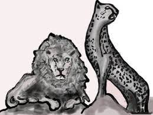

MyKhasaStory
Le lion et le guépard

Dans un coin perdu de l’immense savane africaine, un lion majestueux et un guépard
élancé convoitent l’étroit couloir où passent, tous les jours, les troupeaux de buffles
et d’antilopes. Ils désirent le même terrain de chasse qui pourrait nourrir toute leur
famille tout au long de l’année.
Chacun s’est posté d’un côté du chemin. Déjà ils se toisent depuis plusieurs heures,
sans bouger, sans rien dire. Le lion, du haut de sa superbe, jauge le guépard. Le
guépard, dédaigneux, jauge le lion. Qui du lion ou du guépard cédera le premier?
Soudain le lion et le guépard se lèvent d’un même ensemble, se rapprochent jusqu’à
se trouver nez à nez. Ils s’insultent, s’injurient, montrent les crocs, feulent. Le
temps passe. L’heure du passage du troupeau approche sans qu’aucun d’eux ne
s’en aperçoivent.
Réglé comme une horloge, le troupeau de buffles et d’antilopes passe à l’heure
habituelle. Mais les deux adversaires sont trop occupés par leur dispute pour réagir.
Ni le lion, ni le guépard n’osent bouger de peur que l’autre ne se lance avant lui.
Et le troupeau passe.
Furieux, le lion accuse le guépard d’avoir détourné son attention pour laisser passer
le troupeau. Le guépard nie l’accusation et affirme que c’est le lion qui est fautif.
Trois troupeaux sont déjà passés sans que ni le lion et ni le guépard aient chassé
le moindre gibier. La maman lion et la maman guépard estiment qu’elles ont assez
attendu. Il faut qu’elles nourrissent leurs petits, et elles s’en vont.
Seulement les deux ennemis n’ont pas compris la leçon. Ils continuent à se disputer
des jours durant. Le lion et le guépard ont faim. Ils sont fatigués mais ne veulent
pas céder. Les troupeaux passent sans être inquiétés.
Un jour, arrive un tout petit singe à l’air malicieux. Nullement impressionné par les
Marie-Hélène Lafond
13
deux félins, il s’installe sur un rocher qui domine le passage. Le lion et le guépard le
regardent faire sans réagir. Le singe rit de leur bêtise.
Le lion est en colère de voir cet insignifiant singe se moquer d’eux. Le guépard,
quant à lui, n’attend qu’un signe pour bondir.
Mais le petit singe malin les arrête et propose une solution à leur problème
: pourquoi ne pas utiliser la force du lion et la vitesse du guépard pour chasser
ensemble. Ainsi, la chasse serait plus sûre et ils auraient plus de viande pour nourrir
leur famille respective.
Depuis ce jour, dans un coin perdu de la savane africaine, un lion et un guépard
chassent ensemble à l’entrée d’un étroit couloir où les troupeaux de buffles et
d’antilopes passent à heures régulières. Les familles du lion et du guépard sont de
nouveau réunies et sont enfin heureuses.